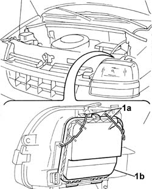
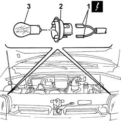

5550C18 bulb of one front turn signal, l/h or r/h - r+r
- Path
- Procedures > 55 ELECTRICAL EQUIPMENT > 5550 MANOEUVRING AND WARNING SIGNALS > 5550C turn signal/hazard warning lights > 5550C18 bulb of one front turn signal, l/h or r/h - r+r
- Kind
- repair procedure (removal / refitting; the operation number is the code)
- Applies to
- all engines; all production periods
- Interactive page
- https://sloeber94.github.io/elrnDB-fDbl/en/#/2584952
Applies to: all engines; all production periods
 Removing
Removing
 Refitting
RefittingDisconnect the battery negative terminal.
1. Release the retaining springs (1a) and remove the protective cover (1b).

Applies to: all engines; all production periods
1. Disconnect the electrical connector from the bulb holder.
 | Name | Connector |
|---|---|---|
1 | Data not available yet |
2. Rotate and remove the bulb holder complete with bulb.
3. Rotate and separate the bulb from the bulb holder.

Applies to: all engines; all production periods
Refitting
RemovingFit the bulb on the bulb holder.
Connect the electrical connector to the bulb holder.
| Name | Connector |
|---|---|---|
Data not available yet |
Fit the bulb holder complete with bulb in its seating in the front lights cluster.
Fit the protective cover for the lights cluster and secure it with the retaining clips.
Connect the battery's negative terminal and check the operation of the direction indicator.